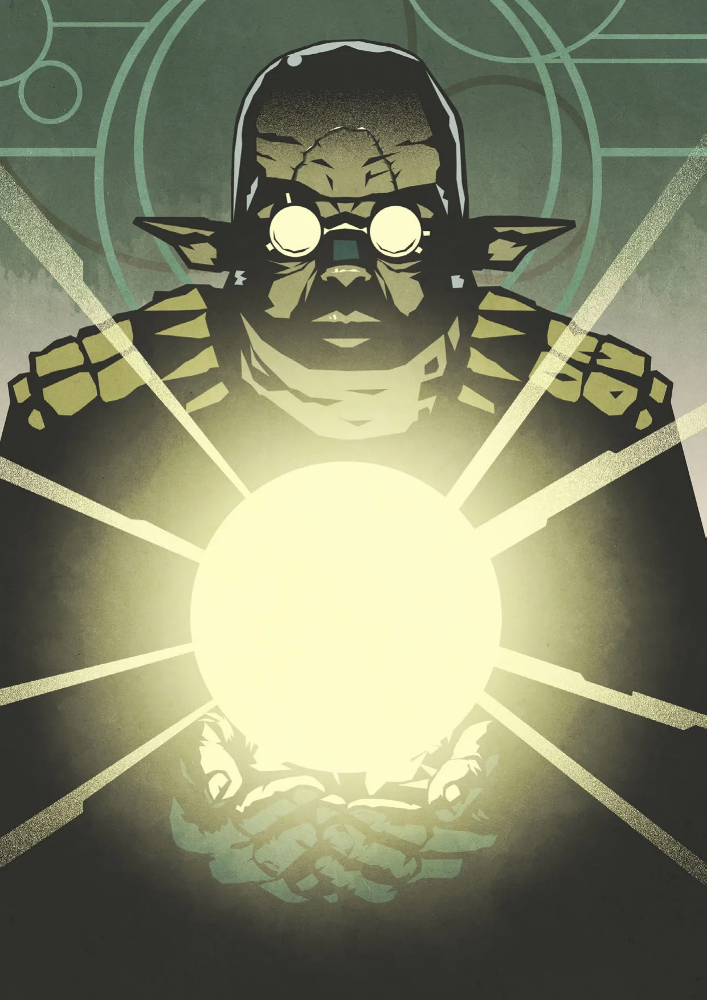

🗺i📖🔍☰🗺i📖🔍☰
🗺i📖🔍☰🗺i📖🔍☰
Die Sonnenkirche bereitet die rituelle Hinrichtung ihres Erzbischofs vor …

Eine Ministerzelle übernimmt das Silberviertel von Mesye So – von einem Casino aus.

Dreck-Epidemie, ein Serienmörder und ein Dämonenvorfall in New Heaven und Perch.